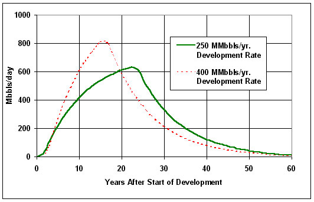

Figure 3. Production Schedules at Two Development Rates for the 95 Percent Probability of Recovering 5.7 Billion Barrels of Technically Recoverable Oil from the ANWR Coastal Plain of Alaska |
|  |
| Source: Energy Information Administration, Reserves and Production Division. Based on USGS estimates of technically recoverable oil. |
Return to 2. Analysis Discussion.